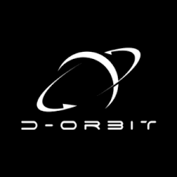
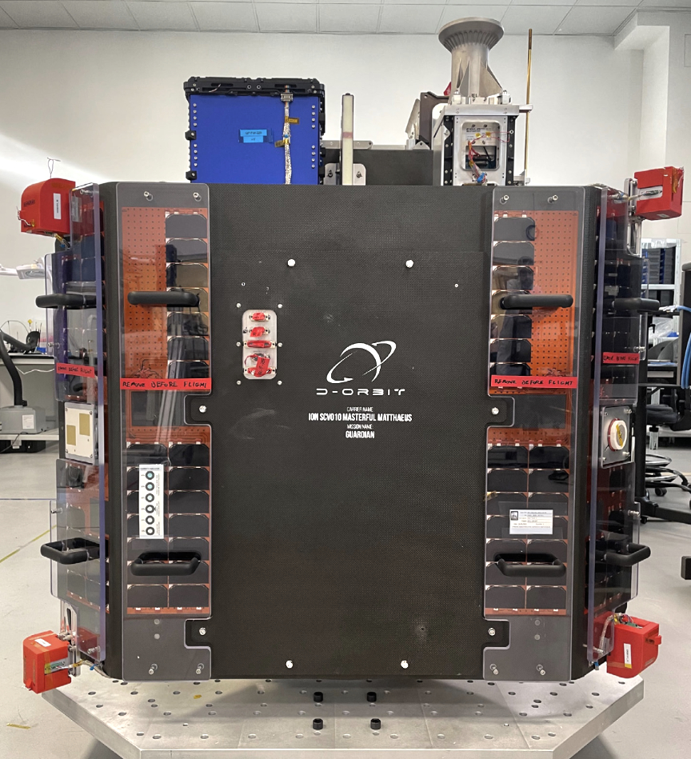
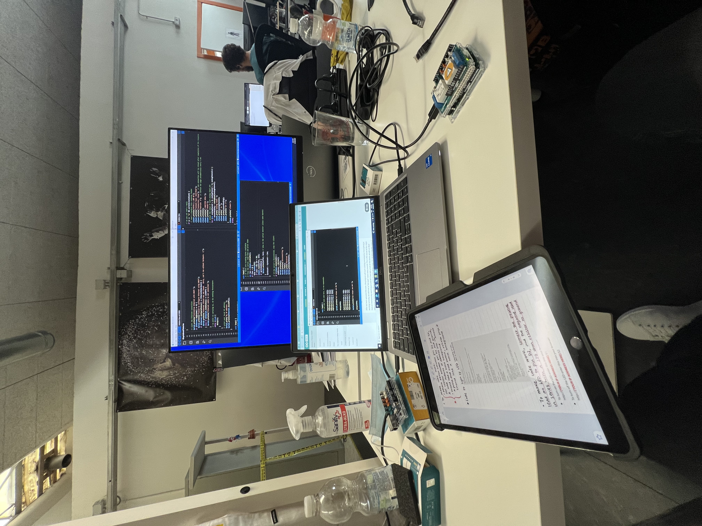

D-Orbit is a market leader in space logistics and transportation, primarily active in the orbital transfer vehicle market. During my internship, I developed satellite testing infrastructure and a graphical user interface to validate EM component functionality before launch.

I created infrastructure for satellite testing and control, using an Arduino based hardware system and custom Python GUI. The system enabled remote control of satellite components on an electric model replica to validate capabilities before integration into flight hardware.

Developed embedded Python scripts to connect remote commands to satellite controls.
Hardware Architecture:
Technical Implementation:

Created a comprehensive graphical interface using PySimpleGUI to manage satellite testing operations.
Key Features: